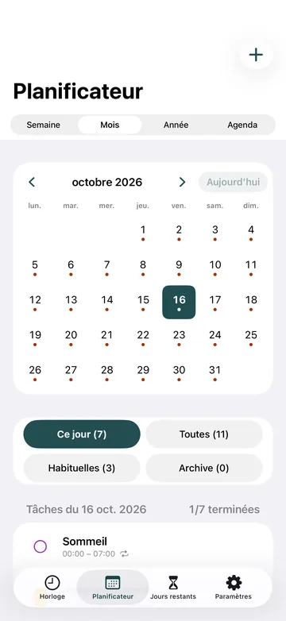
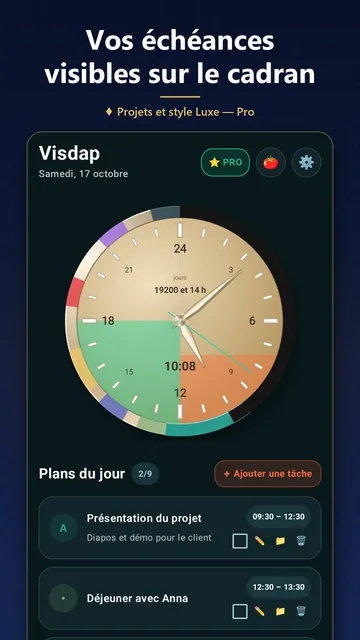
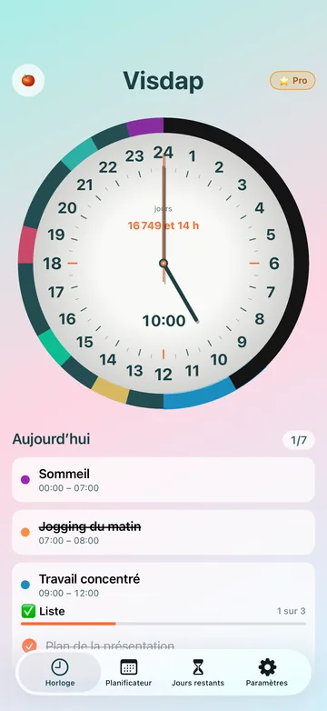
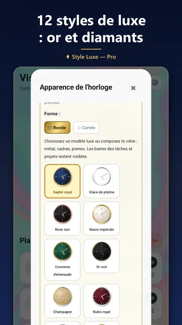
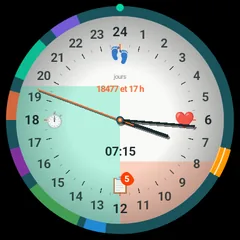

Free
- Jusqu'à 2 tâches par jour
- Votre journée sur le cadran de 24 heures
- Sans compte ni publicité
Agenda visuel de la journée
Visdap transforme vos plans en secteurs colorés autour d'une horloge de 24 heures : d'un coup d'œil, vous voyez la suite et ce qu'il reste de la journée.

L'achat de Pro nécessite une connexion internet.
Bientôt : iPhone · Mac
Écrivez-moi et je vous préviens dès sa sortie
Pour les téléphones Android, les montres Wear OS et les PC Windows.
C'est un cadran étiré sur les 24 heures. Au bout d'une minute, il se lit tout seul.
Donnez à chaque tâche une heure, une couleur et, si vous le souhaitez, un rappel.
Les tâches apparaissent en secteurs sur une horloge de 24 heures : dans l'appli, dans un widget et sur votre montre.
Les rappels avec son et report vous indiquent quand passer à la suite.
Deux courtes vidéos : Visdap en 40 secondes, et le fonctionnement des projets.
Les vidéos sont sans son ; le texte à l'écran est en anglais.

Calendrier mensuel et annuel, priorités S/A/B/C et listes de contrôle pour chaque tâche.
Des rappels sonores avec report, pile à l'heure.

25 minutes de concentration, puis une pause. Chaque session est créditée à un projet avec une courte note.
Jusqu'à 20 projets. Les bandes d'échéance grandissent chaque jour sur le cadran, jusqu'à 4 à la fois.
Voyez combien de jours il vous reste vraiment et consacrez-les à l'essentiel.

Toute la journée sur un seul cadran, sans confusion AM/PM. Rond ou carré, chiffres arabes ou romains.
Une horloge 24 heures et une liste de tâches sur l'écran d'accueil Android ; sous Windows, le cadran s'affiche sur le bureau.

Thèmes clair et sombre, vos couleurs et polices, et des cadrans luxe en or, platine et pierres précieuses.

Visdap pour Wear OS affiche votre journée sur un cadran de 24 heures, directement sur la montre.
Sous Windows, le cadran de 24 heures se place sur le bureau et peut rester au-dessus des autres fenêtres. Vous voyez ce qu'il reste d'un bloc de travail sans changer d'application.

Gratuit · Android 8.0 ou plus récent · les montres Wear OS s'associent à un téléphone Android
Widget AndroidGratuit · Windows 10 (version 1809 ou plus récente) et Windows 11
Horloge de bureau WindowsBientôt
Écrivez-moi et je vous préviens dès sa sortieBientôt
Écrivez-moi et je vous préviens dès sa sortie| Fonction | Android | Wear OS | Windows | iPhone et Mac |
|---|---|---|---|---|
| Cadran de 24 heures avec vos tâches | Oui | Oui | Oui | Bientôt |
| Widgets sur l'écran d'accueil | Oui | Non | Sur le bureau | |
| Tuile et complications | Non | Oui | Non | |
| Rappels | Avec son | Vibration | Avec son | |
| Pomodoro et projets | Oui | Non | Oui | |
| Version gratuite | 2 tâches par jour, jusqu'à 7 jours à l'avance | Affiche les tâches du téléphone | 2 tâches par jour, pour aujourd'hui |
Commencez gratuitement. Passez à Pro quand vous voulez plus.
Pro est un abonnement mensuel ou annuel. Le prix est indiqué dans votre store.
Si Pro prend fin, rien de ce que vous avez créé n'est supprimé. Les limites de Free ne s'appliquent qu'aux nouvelles tâches.
Aucune inscription. Ouvrez l'appli et planifiez.
Vos plans restent sur votre téléphone, votre montre ou votre PC. Nous n'avons pas de serveurs, et l'appli n'a ni publicité ni statistiques.
Sous Android, Visdap peut lire votre calendrier pour afficher les événements à côté de vos tâches. Il n'y écrit jamais.
Ni cookies, ni statistiques, ni scripts tiers. Les liens vers les stores leur indiquent seulement que vous venez de ce site.
Cours, révisions et sommeil sur un même cercle : vous voyez quand il reste du temps pour réviser.
Blocs de travail et pauses sur le cadran, et avec Pro, un minuteur Pomodoro.
Les tâches du jour et les courses, avec des rappels au bon moment.
Pour celles et ceux qui saisissent mieux le temps quand ils le voient.
Non. Visdap fonctionne sans inscription et vos plans sont enregistrés sur votre appareil.
Un calendrier liste des événements. Visdap dessine toute la journée comme une horloge : vous voyez le temps passer et les créneaux libres entre les tâches. Sous Android, il peut afficher les événements du calendrier à côté de vos tâches, en lecture seule et sans les modifier.
Oui. La planification, les rappels et les widgets fonctionnent hors ligne. Seuls l'achat ou la restauration de Pro nécessitent une connexion au store.
Les deux sont en préparation. Pour l'instant, Visdap est disponible pour les téléphones Android, les montres Wear OS et Windows.
Des tâches illimitées, les projets sur le cadran, les tâches récurrentes, la planification à n'importe quelle date, Pomodoro, tous les styles de cadran, y compris luxe, et le son de rappel de votre choix. Pro est un abonnement mensuel ou annuel ; le prix est affiché dans votre store.
Ils restent. Rien de ce que vous avez créé n'est supprimé ; les limites de Free ne s'appliquent qu'à l'ajout de nouvelles tâches.
Non. Ni la version gratuite ni Pro n'affichent de publicité.
Non. Visdap vous aide à planifier et à voir votre temps. Ce n'est pas un dispositif médical et il ne diagnostique ni ne traite rien.
Anglais, ukrainien, allemand, espagnol et français.
Écrivez-nous par e-mail, nous lisons chaque message : oleksandr.miletskyi@gmail.com
Installez Visdap et planifiez votre première journée en quelques minutes. Gratuit pour commencer.